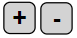

Compacted shapes
Beaver has a machine that transforms a sequence of shapes according to some rules.
Find rules and a sequence of shapes that give a result identical to the target.
Click on the  buttons to add or remove shapes.
Click on the shapes in the gray buttons to change them. For example, click on  .
.
To get all the points, your sequence should only contain 6 shapes.